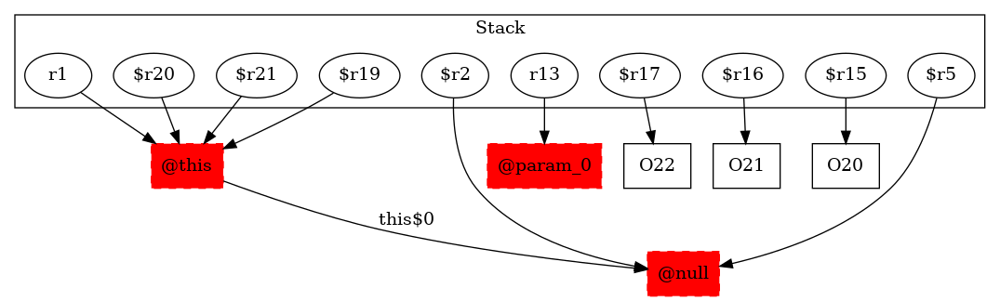

-1 : r1 := @this: TestMidsem$NodeMidesemD
-1 : r13 := @parameter0: testcase.TestMidsem$NodeMidesemD
20 : $r15 = new testcase.TestMidsem$NodeMidesemD
-1 : $r19 = (testcase.TestMidsem$NodeMidesemD) r1
20 : $r2 = $r19.|testcase.TestMidsem$NodeMidesemD: testcase.TestMidsem this$0|
20 : specialinvoke $r15.|testcase.TestMidsem$NodeMidesemD: void |init|(testcase.TestMidsem)|($r2)
21 : $r16 = new testcase.TestMidsem$NodeMidesemA
-1 : $r20 = (testcase.TestMidsem$NodeMidesemD) r1
21 : $r5 = $r20.|testcase.TestMidsem$NodeMidesemD: testcase.TestMidsem this$0|
21 : specialinvoke $r16.|testcase.TestMidsem$NodeMidesemA: void |init|(testcase.TestMidsem)|($r5)
22 : $r17 = new testcase.TestMidsem$NodeMidesemA
-1 : $r21 = (testcase.TestMidsem$NodeMidesemD) r1 ->class soot.jimple.internal.JAssignStmt {Left: class soot.jimple.internal.JimpleLocal, Right: class soot.jimple.internal.JCastExpr}
22 : $r8 = $r21.|testcase.TestMidsem$NodeMidesemD: testcase.TestMidsem this$0|
22 : specialinvoke $r17.|testcase.TestMidsem$NodeMidesemA: void |init|(testcase.TestMidsem)|($r8)
22 : $r15.|testcase.TestMidsem$NodeMidesemD: testcase.TestMidsem$NodeMidesemA f| = $r17
23 : r9 = $r15.|testcase.TestMidsem$NodeMidesemD: testcase.TestMidsem$NodeMidesemA f|
24 : $r12 = $r15.|testcase.TestMidsem$NodeMidesemD: testcase.TestMidsem$NodeMidesemA f|
24 : $r18 = new testcase.TestMidsem$NodeMidesemB
-1 : $r22 = (testcase.TestMidsem$NodeMidesemD) r1
24 : $r11 = $r22.|testcase.TestMidsem$NodeMidesemD: testcase.TestMidsem this$0|
24 : specialinvoke $r18.|testcase.TestMidsem$NodeMidesemB: void |init|(testcase.TestMidsem)|($r11)
24 : $r12.|testcase.TestMidsem$NodeMidesemA: testcase.TestMidsem$NodeMidesemB g| = $r18
-1 : $r23 = (testcase.TestMidsem$NodeMidesemD) r1
25 : virtualinvoke $r23.|testcase.TestMidsem$NodeMidesemD: testcase.TestMidsem$NodeMidesemB bar(testcase.TestMidsem$NodeMidesemA,testcase.TestMidsem$NodeMidesemD)|(r9, r13)
26 : return
